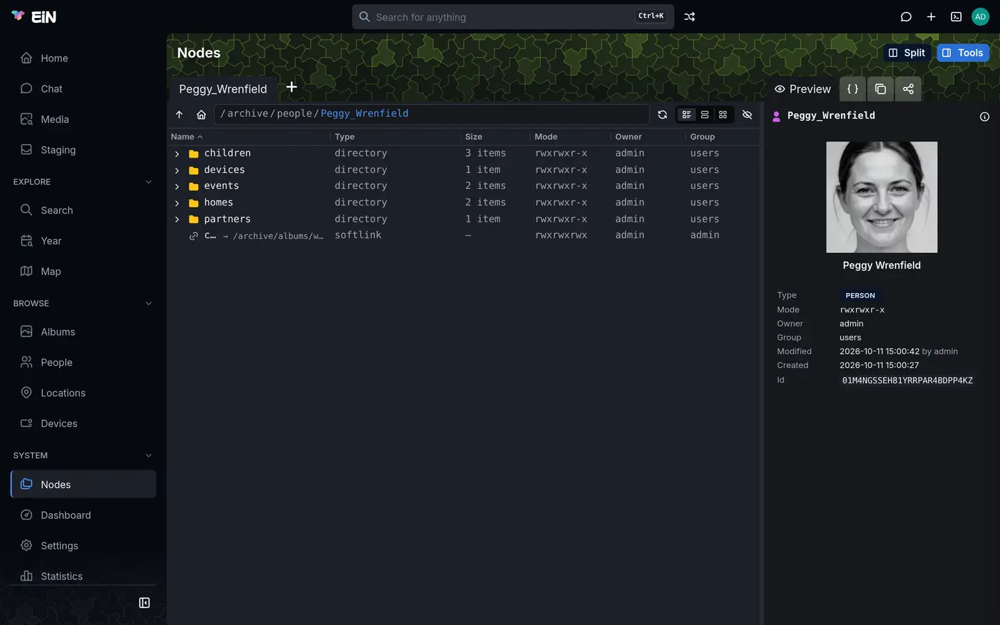

EiN has two places to change a text file: edit in the terminal, which colours the text and checks
JSON, YAML and bash as you type, and the code editor on the Nodes page of the web interface.
This page is for anyone who edits a script, a note or a configuration file in EiN.
Open a file with edit
edit runs in a terminal: the terminal panel in the browser, or an
SSH login from your own computer.
Open the terminal with the terminal button in the top bar, or Alt+T.
Type
editand the path of the file, and press Enter:# in EiN's terminal edit ~/notes.mdThe editor fills the terminal. Change the text, press Ctrl+S to save and Ctrl+Q to leave. The shell's screen comes back as you left it.
A path is read from the directory you are in, so edit tidy.sh opens tidy.sh there. Tab
completes paths after edit as it does after any command.
What the editor shows, here on a nav.json with a missing comma:
1 {
✗2 "hide": ["archive.map" "archive.devices"]
3 }
~
~
nav.json ✗ 2:26 expected ',' or ']' after array element JSON ✗ L 1:1
^S Save ^Q Quit ^F Find ^G Line ^Z Undo ^Y Redo ^K Cut ^U Paste- The text, with line numbers at the left. The cursor's line number is bright, the others
grey. Rows after the end of the file show
~. - The status bar, the second row from the bottom. At the left: the file's name,
[New]for a file not saved yet,[Modified]while there are unsaved changes, then a message or the syntax error described under Checks as you type. At the right: the language, a check mark or cross where the language is checked, and the cursor's position asL line:column. - The bottom row lists the main keys,
^Smeaning Ctrl+S. While the editor asks you something, such asFind:, the question takes this row.
Start a new file
Give edit a path that does not exist yet. The editor opens empty with [New] in the status bar.
Nothing is created until you save; leaving without saving leaves nothing behind.
The first save creates the file in the folder the path names, and decides its type:
- from the name's extension:
notes.mdbecomes Markdown,nav.jsonJSON,tidy.sha shell script; - for a name without a known extension, from a first line starting with
#!:#!bashmakes a script,#!/usr/bin/env python3a Python file; - otherwise plain text.
Typing a #!bash line into a new file colours and checks it as bash at once.
The folder must exist. To start a file in a folder that is not there yet, make the folder first:
# in EiN's terminal
mkdir -p ~/.ui && edit ~/.ui/nav.jsonA script you write with edit needs execute permission before it runs as a command:
chmod 755 tidy.sh. The shell language covers scripts.
When edit will not open a file
edit prints one line and goes back to the prompt:
| Message | Why | What to do |
|---|---|---|
edit: missing file operand |
You gave no path. | Name the file: edit notes.md. |
edit: not a terminal |
The command did not run in a terminal: one command sent with ssh … 'edit notes.md', or a script started without one. The assistant never runs edit. |
Use the terminal panel, or sign in over SSH with a shell of your own (ssh -p 2222 anna@ein.local) and run edit there. |
edit: /home/anna/staging: not a file (directory) |
The path is a folder, or another kind of node such as an album or a person. The type is in brackets. | Name a file. ls -l shows what a folder holds. |
edit: /home/anna/beach.jpg: not a text file (mimetype: image/jpeg) |
The file is a picture, a video, a PDF or another file that is not text. | Nothing to edit here. A picture opens in the viewer. |
edit: /home/anna/old.txt: not UTF-8 text |
The file is text in another encoding, such as Latin-1, or holds bytes that are not text. | Convert it to UTF-8 on your own computer and upload it again. |
edit: /etc/keys: Access denied … |
You may not read the file. | Ask its owner or an administrator. Permissions in depth explains who may read what. |
The full entry for the command is edit in the reference.
Save and leave
Press Ctrl+S. The status bar says Saved and [Modified] goes away.
If the text has a syntax error, the editor asks first, on the bottom row, with the first error after the question:
Save with errors? (y/N) ✗ 2:26 expected ',' or ']' after array elementPress y to save anyway. n, Enter or any other letter leaves the
file as it was and the status bar says Not saved; Esc takes the question away.
To leave, press Ctrl+Q. With nothing unsaved the editor closes at once. Otherwise it asks:
Save changes? (y/n, Esc cancels)- y saves and leaves. If the text has an error,
Save with errors? (y/N)comes first. - n leaves without saving.
- Esc or Ctrl+C goes back to the text.
Ctrl+C does not leave the editor: on its own it only shows ^Q quits.
Saving keeps the file's line endings: a file written with Windows line endings (CRLF) keeps them, and a file that ended without a final newline still does. A new file ends with a newline.
If saving fails
The status bar shows Not saved: and the reason in red, and your text stays in the editor. The
usual reasons are a folder that does not exist and a file you may read but not change
(Access denied).
In the terminal panel you can put it right without losing the text:
- Press Alt+N for a new terminal tab.
- Make the folder there with
mkdir -p, or ask for access to the file. - Go back to the editor's tab with Alt+← and press Ctrl+S again.
Over SSH, open a second SSH login for the same purpose.
edit does not notice when someone else changes the file while you have it open: saving writes
your text over theirs.
Keys
| Keys | What they do |
|---|---|
| Ctrl+S or Ctrl+O | Save. With a syntax error in the text, asks first. |
| Ctrl+Q or Ctrl+X | Leave. With unsaved changes, asks first. |
| Ctrl+F | Find. The question starts with the last search; Enter goes to the next match. |
| Ctrl+G | Go to a line, or to line:column. |
| Ctrl+Z / Ctrl+Y | Undo / redo. |
| Ctrl+K | Cut the cursor's line. Lines cut one after another collect into one cut. |
| Ctrl+U | Paste what was cut, at the cursor. |
| ← → | One character left or right, on to the next or previous line at a line's end. |
| ↑ ↓ | One row up or down, keeping to the column you started from. |
| Ctrl+← Ctrl+→, Alt+← Alt+→ | One word left or right. In the terminal panel only the Ctrl keys reach the editor. |
| Home or Ctrl+A | To the first character of the line that is not a space; pressed again, to the very start. On a wrapped row, to the start of that row. |
| End or Ctrl+E | To the end of the line. On a wrapped row, to the end of that row. |
| Ctrl+Home / Ctrl+End | To the start / end of the file. |
| PgUp / PgDn | A screen up / down. |
| Enter | A new line, indented as the line it came from. |
| Tab | Indent. See Indentation. |
| Backspace / Delete | Delete the character before / after the cursor. At the start or end of a line, join it with the line before or after. |
| Esc or Ctrl+C | Cancel a question: find, go to a line, save with errors, save changes. |
| Ctrl+C with no question open | Shows ^Q quits. |
On a Mac, too, the keys are Ctrl, not ⌘.
Find text and go to a line
- Press Ctrl+F. The bottom row shows
Find:, with your last search already typed. - Type what you are looking for and press Enter.
The cursor moves to the next match after it. Case does not matter. When the search runs past the end
of the file it goes on from the top and the status bar says Search wrapped; with no match at all
it says Not found. To go on to the next match, press Ctrl+F and
Enter again.
Ctrl+G shows Go to line[:column]:. Type 40 for line 40, or 40:12 for its
twelfth column, and press Enter. A number past the end goes to the last line; anything
that is not a number shows Not a line number.
Undo, cut and paste
Ctrl+Z undoes up to 200 steps, and Ctrl+Y redoes them.
A word typed in one go is one step, and so is a run of deletions or a paste; a pause of half a second
starts a new step. With nothing left, the status bar says Nothing to undo or Nothing to redo.
Ctrl+K and Ctrl+U use the editor's own clipboard, not your computer's: press Ctrl+K three times to cut three lines, move, and press Ctrl+U to put them back there. Text pasted from your computer goes in exactly as it is, without being indented again, and undoes in one step.
Indentation
Enter starts the new line with the indent of the one before. A line left holding only spaces is emptied.
Tab inserts one step of the file's own indent:
- a tab, when the file indents mostly with tabs, and always in a Makefile;
- otherwise as many spaces as the smallest indent of two or more spaces the file has, at most 8;
- two spaces in a file with no indent yet.
Shift+Tab does nothing; take an indent away with Backspace. Tabs
in the text reach the next stop of four columns, and other control characters as ^ and a letter.
Colours and line wrapping
edit works out the language of a file in this order, and colours the text by it:
- the name: its extension, or the names
MakefileandGNUmakefile; - the file's type, as EiN recorded it when the file came in;
- a first line starting with
#!, when the type says no more than that the file is text.
| Language | Files | Checked as you type |
|---|---|---|
| JSON | .json |
Yes |
| JSONC | .jsonc: JSON in which comments are allowed |
Yes |
| YAML | .yaml, .yml |
Yes |
| bash | .sh, .bash; a shell-script type; a #! line naming bash, sh or any other interpreter not below |
Yes |
| Markdown | .md, .markdown |
Its code blocks |
| TypeScript | .ts, .mts, .tsx; #!ts or #!deno |
No |
| JavaScript | .js, .mjs, .cjs, .jsx; #!node or #!js |
No |
| Python | .py; #!python or #!python3, also through #!/usr/bin/env |
No |
| XML | .xml, .html, .htm, .svg |
No |
| CSS | .css |
No |
| Makefile | Makefile, GNUmakefile, .mk |
No |
| Others | .scss; .ini, .conf and .toml (as ini); .sql; .diff, .patch; .go; .rs (rust); .lua |
No |
The status bar names the language at its right; a file that matches none is text. A file without
an extension, such as ~/.bashrc, is plain text unless its first line starts with #!. In a
Markdown file, each fenced code block is coloured in the language its fence names. A text longer
than 256 KB is shown without colours.
Plain text and Markdown wrap at the edge of the window, at the last space that fits; a row that continues a line has no line number in front of it, and ↑ and ↓ move by rows on the screen. Code does not wrap: a long line scrolls sideways to keep the cursor in view, and Home brings the indent back into view.
cat colours a text file in the terminal the same way, without opening it.
Checks as you type
edit checks a JSON, JSONC, YAML or bash file after each change. In a Markdown file it checks
every fenced code block whose fence names one of those languages: json, jsonc or json5,
yaml or yml, and bash, sh, shell, zsh or console, fenced with ``` or ~~~.
An error in a block is shown at its line in the whole document.
Hide the map for everyone:
```json
{ "hide": ["archive.map"] }
```An error shows in three places:
- A red
✗in front of the line number of the line it is on. - The character where the parser stopped, underlined in red. When the error is at the end of the line, a red block stands after its last character.
- The status bar: at the left,
✗, the line and column, and what is wrong, such as✗ 2:26 expected ',' or ']' after array element, followed by(+2 more)when there are more. It shows the error on the cursor's line when there is one, otherwise the first. At the right, the language with✓when the text is correct,✗when it has an error, and…while a check is still to come.
Fix the error and the marks go away as you type. An empty JSON file is not an error: it is one you are starting.
For bash the messages are those of EiN's shell, among them unexpected token 'fi',
unexpected end of file, and here-document not closed (wanted 'EOF') for a here-document that is
never ended.
A check that takes longer than 50 milliseconds waits until you stop typing for half a second, and
the status bar shows … meanwhile, so a long file stays quick to type in. A text longer than
1,000,000 characters is not checked. Saving always checks the text as it is at that moment.
The checks say whether a file can be read, not whether it does what you mean. For the file of your
sidebar, ui-nav also checks the fields in it; see Your sidebar and top bar.
Edit in the terminal panel and over SSH
In the terminal panel:
- Alt+M gives the terminal the full height of the window, and the editor redraws to fill it. The editor also follows any other change of size.
- Alt+← and Alt+→ switch between terminal tabs, and Alt+↑ and Alt+↓ change the panel's height, so they never reach the editor. Move by word with Ctrl+← and Ctrl+→.
- Hiding the panel, with Alt+T or a click outside it, leaves the editor open in its tab, unsaved changes and all.
Over SSH, edit needs the shell you get by signing in: ssh -p 2222 anna@ein.local, then
edit notes.md. A command sent along on the ssh line, even with ssh -t, runs without a terminal
and stops with edit: not a terminal. SSH and SFTP has the rest.
Edit a file in the web interface
The Nodes page has a code editor for those who would rather stay in the browser. Nodes is
under System in an administrator's sidebar. Other people do not have it in their sidebar, but
anyone signed in can open it at /system/nodes (for example http://ein.local:8080/system/nodes),
and sees there what they may read.


- Open Nodes. It starts in your home folder,
/home/<you>. - Go to the folder that holds the file. Names that start with a dot, such as
.bashrc,.configand.ui, are hidden: press Ctrl+H, or the eye button at the end of the address bar ("Show names starting with a dot (Ctrl+H)"), to show them. - Right-click the file and choose Open. Double-clicking or Enter goes into the file instead, to the nodes it holds.
- The code editor opens in a dialog, titled with the file's name and with its path under it. Beside the title, badges name the language (such as JSON, SHELL or TEXT), say READ-ONLY when you may not change the file, and UNSAVED once you have changed it.
- Make your change and choose Save, or press Ctrl+S (⌘+S on a Mac). Save is greyed until there is something to save.
- Choose Close when you are done.
If you close with unsaved changes, the dialog asks "Discard unsaved changes?": Keep editing takes you back, Discard closes without saving. Esc closes the dialog only when there is nothing unsaved. Raw, at the left under the editor, opens the file itself in a new browser tab.
The code editor has line numbers, Ctrl+F to find, Ctrl+Z to undo and Tab to indent. It colours JSON, JavaScript, TypeScript, YAML, Markdown, HTML, CSS, XML and shell scripts, by the file's type first and then its extension.
What Open does depends on the file: a text file opens in the code editor, a picture, video or recording in the viewer, and any other file in a new browser tab. The Preview in the tool pane beside the list shows the first 64 KB of a text file without opening it.
Where the code editor stops:
| What you see or want | What to do |
|---|---|
| "Too large to edit here (N KB). Open the raw file instead." | The file is larger than 2 MB. Use the link to read it, or edit in the terminal to change it. |
| A new file | The Nodes page makes folders (New directory) but not files. Start the file with edit, or upload it. |
| A check of your JSON or YAML | The code editor colours but does not check. Open the file with edit to see errors as you type. |
| A red box under the editor: "could not write …" | The file was not saved: usually you may read it but not change it. Your text is still in the editor; copy it before you discard it. |
Which to use
edit in the terminal |
Code editor on the Nodes page | |
|---|---|---|
| Where | Terminal panel, SSH login | Browser, Nodes page |
| New files | Yes, on the first save | No |
| Checks JSON, YAML and bash | Yes, as you type, and before saving | No |
| Colours | By name, type or #! line |
By type, then name |
| Largest file | Any; no checks over 1,000,000 characters | 2 MB |
| Keys | Its own, Ctrl on a Mac too | A browser editor's, ⌘ on a Mac |
Files people often edit are ~/.bashrc (The shell language), ~/.ui/nav.json
(Your sidebar and top bar) and the files listed in
Configuration files. Every key in EiN is gathered in
Keyboard shortcuts.